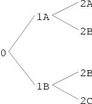

18 Graph Formatting
CLIM provides a mechanism for arranging arbitrary output in a graph. The
following code produces the graph shown in Figure 18.1 .
(defun graph-test (stream &optional (orientation :horizontal))
(fresh-line stream)
(macrolet ((make-node (&key name children)
`(list* ,name ,children)))
(flet ((node-name (node)
(car node))
(node-children (node)
(cdr node)))
(let* ((2a (make-node :name "2A"))
(2b (make-node :name "2B"))
(2c (make-node :name "2C"))
(1a (make-node :name "1A" :children (list 2a 2b)))
(1b (make-node :name "1B" :children (list 2b 2c)))
(root (make-node :name "0" :children (list 1a 1b))))
(format-graph-from-roots
(list root)
#'(lambda (node s)
(write-string (node-name node) s))
#'node-children
:orientation orientation
:stream stream)))))

Figure 18.1: Example of graph formatting.
18.1 Graph Formatting Functions
| format-graph-from-roots | root-objects object-printer inferior-producer
&key stream
orientation cutoff-depth
merge-duplicates duplicate-key duplicate-test
generation-separation within-generation-separation
center-nodes
arc-drawer arc-drawing-options
graph-type (move-cursor t ) | [Function] |
Draws a graph whose roots are specified by the sequence root-objects . The
nodes of the graph are displayed by calling the function object-printer ,
which takes two arguments, the node to display and a stream.
inferior-producer is a function of one argument that is called on each
node to produce a sequence of inferiors (or nil if there are none). Both
object-printer and inferior-producer have dynamic extent.
The output from graph formatting takes place in a normalized +y-downward
coordinate system. The graph is placed so that the upper left corner of its
bounding rectangle is at the current text cursor position of stream . If
the boolean move-cursor is true (the default), then the text cursor
will be moved so that it immediately follows the lower right corner of the
graph.
The returned value is the output record corresponding to the graph.
stream is an output recording stream to which output will be done. It
defaults to *standard-output* .
orientation may be either :horizontal (the default) or
:vertical . It specifies which way the graph is oriented. CLIM
implementations are permitted to extend the values of orientation , for
example, adding :right or :left to distinguish between left-to-right
or right-to-left layouts.
cutoff-depth specifies the maximum depth of the graph. It defaults to
nil , meaning that there is no cutoff depth. Otherwise it must be an
integer, meaning that no nodes deeper than cutoff-depth will be formatted
or displayed.
If the boolean merge-duplicates is true , then duplicate objects in
the graph will share the same node in the display of the graph. That is, when
merge-duplicates is true , the resulting graph will be a tree. If
merge-duplicates is false (the default), then duplicate objects
will be displayed in separate nodes. duplicate-key is a function of one
argument that is used to extract the node object component used for duplicate
comparison; the default is identity . duplicate-test is a function of
two arguments that is used to compare two objects to see if they are duplicates;
the default is eql . duplicate-key and duplicate-test have
dynamic extent.
generation-separation is the amount of space to leave between successive
generations of the graph; the default should be chosen so that the resulting
graph is visually pleasing. within-generation-separation is the amount of
space to leave between nodes in the same generation of the graph; the default
should be chosen so that the resulting graph is visually pleasing.
generation-separation and within-generation-separation are specified
in the same way as the inter-row-spacing argument to
formatting-table .
When center-nodes is true , each node of the graph is centered with
respect to the widest node in the same generation. The default is false .
arc-drawer is a function of seven positional and some unspecified keyword
arguments that is responsible for drawing the arcs from one node to another; it
has dynamic extent. The positional arguments are the stream, the ``from''
node's object, the ``to'' node's object, the ``from'' x and y position, and
the ``to'' x and y position. The keyword arguments gotten from
arc-drawing-options are typically line drawing options, such as for
draw-line* . If arc-drawer is unsupplied, the default behavior is to
draw a thin line from the ``from'' node to the ``to'' node using
draw-line* .
graph-type is a keyword that specifies the type of graph to draw. All
CLIM implementations must support graphs of type :tree ,
:directed-graph (and its synonym :digraph ), and
:directed-acyclic-graph (and its synonym :dag ). graph-type defaults to :digraph when merge-duplicates is true , otherwise
it defaults to :tree . Typically, different graph types will use different
output record classes and layout engines to lay out the graph. However, it is
permissible for all of the required graph types to use exactly the same graph
layout engine.
18.2 The Graph Formatting Protocols
Graph formatting is implemented on top of the basic output recording protocol,
using with-new-output-record to specify the appropriate type of output
record. For example, format-graph-from-roots first collects all the output
that belongs in the graph into a collection of graph node output records by
calling generate-graph-nodes . All of the graph node output records are
descendents of a single graph output record. During this phase,
stream-drawing-p is bound to nil and stream-recording-p is bound
to t . When all the output has been generated, the graph layout code
(layout-graph-nodes and layout-graph-edges ) is called to compute the
graph layout. Finally, the graph output record is positioned on the stream at
the current text cursor position and then displayed by calling replay on
the graph output record.
| graph-output-record | [Protocol Class] |
The protocol class that represents a graph; a subclass of output-record .
If you want to create a new class that behaves like a graph output record, it should be a subclass of graph-output-record. Subclasses of graph-output-record must obey the graph output record protocol.| graph-output-record-p | object | [Predicate] |
Returns true if object is a graph output record , otherwise
returns false .
| standard-graph-output-record | [Class] |
The instantiable class of output record that represents a graph. Its children
will be a sequence graph nodes. This is a subclass of graph-output-record .
| :merge-duplicates | [Init arg] |
| :generation-separation | [Init arg] |
| :within-generation-separation | [Init arg] |
All the graph output record must handle these seven initargs, which are used to
specify, respectively, the orientation, node centering, cutoff depth, merge
duplicates, generation and within-generation spacing, and the node hash table of
a graph output record.
| define-graph-type | graph-type class | [Macro] |
Defines a new graph type named by the symbol graph-type that is
implemented by the class class . class must be a subclass of
graph-output-record . Neither of the arguments is evaluated.
All CLIM implementations must support graphs of type :tree ,
:directed-graph (and its synonym :digraph ), and
:directed-acyclic-graph (and its synonym :dag ).
| graph-root-nodes | graph-record | [Generic function] |
Returns a sequence of the graph node output records corresponding to the root
objects for the graph output record graph-record .
| (setf graph-root-nodes) | roots graph-record | [Generic function] |
Sets the root nodes of graph-record to roots .
| generate-graph-nodes | graph-record stream
root-objects object-printer inferior-producer
&key duplicate-key duplicate-test | [Generic function] |
This function is responsible for generating all of the graph node output records
of the graph. graph-record is the graph output record, and stream is the output stream. The graph node output records are generating by calling
the object printer on the root objects, then (recursively) calling the inferior
producer on the root objects and calling the object printer on all inferiors.
After all of the graph node output records have been generated, the value of
graph-root-nodes of graph-record must be set to be a sequence of the
those graph node output records that correspond to the root objects.
root-objects , object-printer , inferior-producer ,
duplicate-key , and duplicate-test are as for
format-graph-from-roots .
| layout-graph-nodes | graph-record stream arc-drawer arc-drawing-options | [Generic function] |
This function is responsible for laying out the nodes in the graph contained in
the output record graph-record . It is called after the graph output has
been collected, but before the graph record has been displayed. The method on
standard-graph-output-record implements the usual graph layout constraint
solver. stream is the stream on which the graph is displayed.
| layout-graph-edges | graph-record stream arc-drawer arc-drawing-options | [Generic function] |
This function is responsible for laying out the edges in the graph. It is
called after the graph nodes have been layed out, but before the graph record
has been displayed. The method on standard-graph-output-record simply
causes thin lines to be drawn from each node to all of its children.
graph-record and stream are as for layout-graph-nodes .
| graph-node-output-record | [Protocol Class] |
The protocol class that represents a node in graph; a subclass of
output-record .
If you want to create a new class that behaves like a graph node output record, it should be a subclass of graph-node-output-record. Subclasses of graph-node-output-record must obey the graph node output record protocol.| graph-node-output-record-p | object | [Predicate] |
Returns true if object is a graph node output record ,
otherwise returns false .
| standard-graph-node-output-record | [Class] |
The instantiable class of output record that represents a graph node. Its
parent will be a graph output record. This is a subclass of
graph-node-output-record .
| graph-node-parents | graph-node-record | [Generic function] |
Returns a sequence of the graph node output records whose objects are
``parents'' of the object corresponding to the graph node output record
graph-node-record . Note that this is not the same as
output-record-parent , since graph-node-parents can return output
records that are not the parent records of graph-node-record .
| (setf graph-node-parents) | parents graph-node-record | [Generic function] |
Sets the parents of graph-node-record to be parents . parents must be a list of graph node records.
| graph-node-children | graph-node-record | [Generic function] |
Returns a sequence of the graph node output records whose objects are
``children'' of the object corresponding to the graph node output record
graph-node-record . Note that this is not the same as
output-record-children , since graph-node-children can return output
records that are not child records of graph-node-record .
| (setf graph-node-children) | children graph-node-record | [Generic function] |
Sets the children of graph-node-record to be children .
children must be a list of graph node records.
| graph-node-object | graph-node-record | [Generic function] |
Returns the object that corresponds to the graph node output record
graph-node-record . It is permissible for this function to work correctly
only while inside of the call to format-graph-from-roots . It is unspecified
what result will be returned outside of format-graph-from-roots . This
restriction is permitted so that CLIM is not required to capture application
objects that might have dynamic extent.